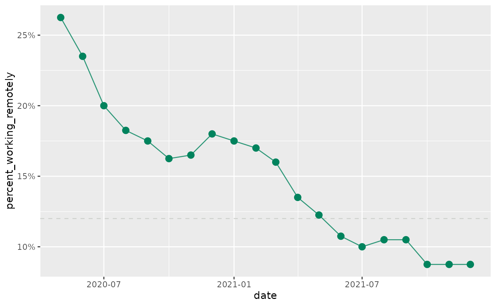

The Center for Rural Innovation ggplot2 theme
Source:R/update_defaults.R
update_cori_geom_defaults.Rdupdate_cori_geom_defaults() provides a ggplot2 theme that aligns with the
CORI style guide, with sensible defaults.
Examples
library(ggplot2)
library(dplyr)
data(cori_employment)
update_cori_geom_defaults()
cori_education %>%
group_by(date) %>%
summarize(percent_working_remotely = mean(percent_working_remotely)) %>%
ggplot(aes(date, percent_working_remotely)) +
geom_hline(yintercept = 0.12) +
scale_y_continuous(labels = scales::percent) +
geom_line() +
geom_point()
